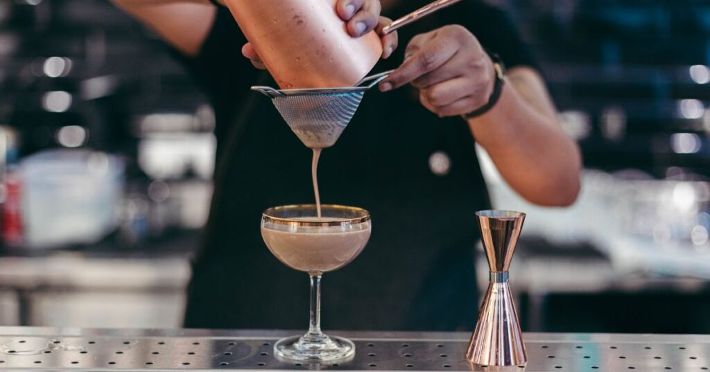
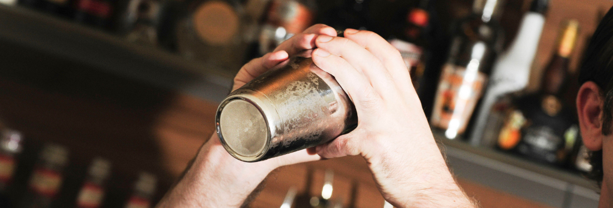
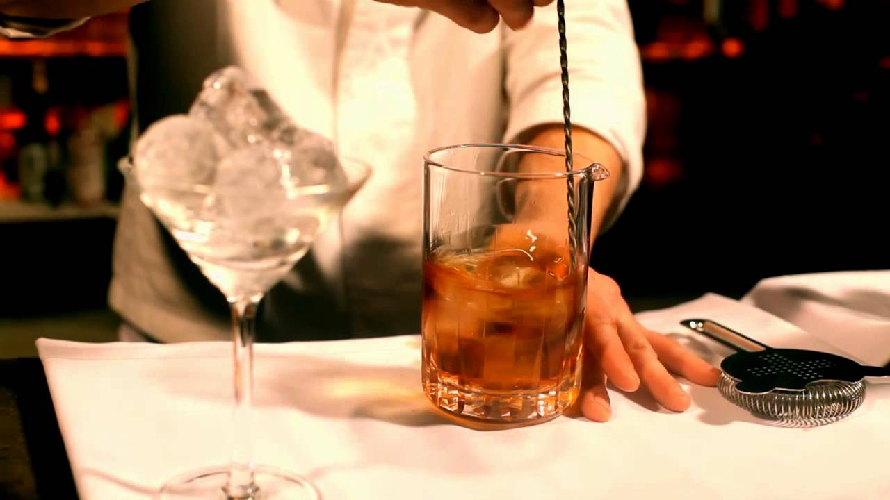
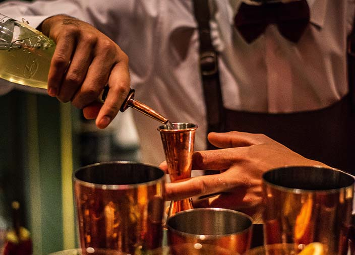
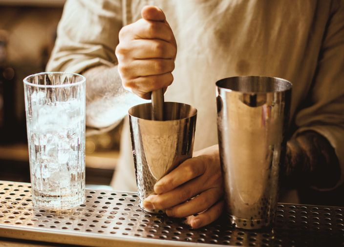
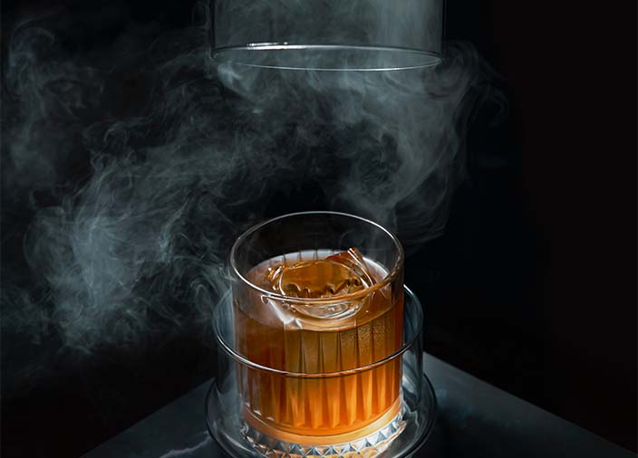

Metodos
Existen diferentes técnicas para preparar un trago, cada una pensada para optimizar el sabor, la textura y la presentación de la bebida.
Colado
El colado se utiliza para separar los ingredientes sólidos de la bebida líquida. Por ejemplo, se cuelan hielos, pulpas de frutas o hierbas después de agitar o mezclar el trago. Se puede usar un colador fino (fine strainer) o un colador estándar (Hawthorne strainer). Esto garantiza un trago más limpio y estéticamente agradable.

Agitado
Consiste en mezclar los ingredientes en una coctelera con hielo, agitándolos vigorosamente. Es ideal para tragos que contienen jugos, lácteos o mezclas densas, ya que ayuda a emulsionar y enfriar rápidamente. Después de agitar, se cuela la bebida para servirla.

Revolvimiento
Se mezcla suavemente en un vaso mezclador con una cuchara larga, generalmente con hielo. Este método es preferido para tragos que solo contienen licores claros y que no necesitan ser demasiado aireados, como un Martini o un Manhattan. Después se cuela directamente en el vaso de servicio.

Vertido directo
Se prepara directamente en el vaso donde se va a servir, sin necesidad de agitar ni revolver. Se utiliza comúnmente para tragos simples como el Gancia con Sprite o un Cuba Libre. A veces se remueve suavemente con una cuchara para integrar los ingredientes.

Macerado
Se aplastan frutas, hierbas o especias en el fondo del vaso para liberar sus aromas y jugos antes de agregar los licores y demás ingredientes. Es común en mojitos y caipirinhas. Después de macerar, se puede colar o servir directamente según la receta.

Flotado
Consiste en verter lentamente un líquido más ligero sobre otro más denso para crear capas visuales. Se hace con cuidado usando una cuchara o inclinando el vaso. Es utilizado para crear efectos visuales en tragos como el B-52.

Nitro o infusión
Algunas bebidas pueden prepararse infundiendo sabores con gases, humo o hierbas, o carbonatándolas para dar textura efervescente. Son técnicas más avanzadas que buscan resaltar aromas y sabores de manera innovadora.
